<ion-content>
  <div class="fondo">
  
    <ion-button type="button" color="tertiary" class="btnClienteRegistradoInicio"
      (click)="manejadoraInicio('CLIENTE_REGISTRADO')">Registrarme</ion-button>
    <ion-button type="button" color="tertiary" class="btnClienteAnonimoInicio" 
      (click)="manejadoraInicio('CLIENTE_ANONIMO')">Ingreso<br>sin registro</ion-button>
    <ion-button type="button" color="tertiary" class="btnLoginInicio" 
      (click)="manejadoraInicio('LOGIN')">Ya estoy registrado</ion-button>
  
      
      
      <div class="logoSplash">
        
      </div>
  </div>
</ion-content>